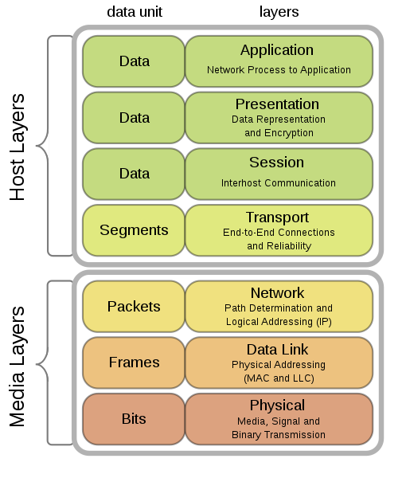

Réseau #
Lorsqu’on relie plusieurs ordinateurs on dit qu’ils sont en réseau.
La laison entre ces machines peut être filaire (un câble) ou non (ondes radio).
Nous allons étudier les protocoles qui sont employés sur internet afin de relier les machines, à savoir TCP et IP
Liaison physique #
Dans l’usage courant, on rencontre :
- les câbles ethernet munis de port RJ45
- les réseaux domestiques Wi-Fi (Wireless Fidelity)
- les réseaux mobiles GSM (Global System for Mobile Communications)
Adresse IP #
IP pour, Internet Protocol désigne à la fois le protocole utilisé et l’adresse d’une machine sur un réseau IP.
IPv4, IPv6 #
Commençons par le protocole dont vous avez tous entendu parlé, IPv4.
Ses adresses sont généralement présentées sous la forme de 4 nombres entre 0
et 255 donnés sous forme décimale et séparés par des points : 192.168.0.1
Adresse IPv4 : 4 nombres entiers entre 0 et 255 = 4 paquets d’un octet = 32 bits.
Il y a donc $256^4 = 2^{32} = 4~294~967~296$ adresses IPv4 différentes.
Toute machine reliée à un réseau IP se voit attribuer une adresse IP permettant de l’identifier.
Plus rarement, on donne l’adresse et un complément : 192.168.0.1/24
Le /24 permet de distinguer la partie réseau de la partie machine
dans cette adresse.
Partie réseau, partie machine #
Considérons une adresse IPv4 complète : 192.168.1.2/24
Le /24 signifie que les 24 premiers bits (= les 3 premiers octets = les 3 premiers
nombres) constituent la partie réseau et les 8 derniers ($32-24=8$) la partie
machine.
Aussi, la partie réseau est : 192.168.1.0 et ce réseau peut abriter $2^8=256$ machines
différentes. En pratique un peu moins, certaines adresses étant réservées.
Lorsque le nombre de bits de l’adresse réseau est multiple de 8 il n’y a aucune difficulté :
/8: 8 premiers bits, adresse réseau de la formea.0.0.0et jusqu’à $2^{24}$ machines/16: 16 premiers bits, adresse réseau de la formea.b.0.0et jusqu’à $2^{16}$ machines/24: 24 premiers bits, adresse réseau de la formea.b.c.0et jusqu’à $2^{8}$ machines
Cela devient plus complexe avec une adresse réseau occupant un autre nombre. On utilise alors un masque de sous réseau.
Masque de sous réseau #
Traitons rapidement le cas d’une adresse en /22
La partie réseau occupe 22 bits et la partie machine 10 bits.
Par exemple pour 122.34.170.45/22
On converti l’adresse IP en binaire, complétés par des 0 à gauche pour occuper un octet :
01111010.00100010.10101010.00101101
Ensuite, on écrit le masque de sous réseau, constitué de 22 bits à 1 et 10 bits à 0 :
11111111.11111111.11111100.00000000
On réalise ensuite un ET logique, bit par bit entre l’adresse IP et son masque :
01111010.00100010.10101010.00101101
ET 11111111.11111111.11111100.00000000
---------------------------------------
= 01111010.00100010.10101000.00000000
Soit : 122.34.168.0
Et ceci nous donne l’adresse réseau.
De toute évidence, ce n’est pas difficile à programmer, c’est plus difficile pour un humain.
Épuisement des adresses IPv4 #
C’est une difficulté majeure, on ne dispose que de 4 milliards d’adresses, moins qu’il n’existe de machines actuellement connectées à internet.
Aussi, il faut trouver des solutions pour reconnaître les machines sur internet.
Une approche est de modifier la norme IPv4 afin de proposer davantage d’adresses.
IPv6 #
Cette nouvelle norme utilise 128 bits (au lieu de 32) soit largement assez pour donner une adresse unique à chaque machine.
Il y a donc $2^{128}$ adresses IPv6 disponibles…
La partie réseau occupe toujours les 64 premiers bits et la partie machine les 64 derniers bits.
Les adresses IPv6 sont généralement données en hexadécimal : fe81::b097:2eb5:47e3:fb4d:1ef3:98d3:90b4
Vérifions rapidement : 8 blocs de 4 chiffres hexadécimaux = 32 chiffres hexadécimaux donc $16^{32} = 2^{4 \times 32} = 2^{128}$ adresses différentes. Le compte est bon…
Réseaux publics et privés #
Internet est un ensemble de réseaux publics, chaque machine raccordée à internet peut transmettre des données à une autre machine.
Les données transitent par des routeurs qui sont des machines raccordant plusieurs réseaux entre eux. Ces routeurs ont donc plusieurs adresses IP, une par réseau.
Un routeur peut relier plusieurs réseaux publics ou relier un réseau privé à un réseau public.
Lorsqu’on effectue une recherche depuis un poste du lycée vers une machine distante, c’est le routeur qui se charge de transmettre les données.
$;$
Protocole IP #
Le rôle du protocole IP est de transmettre des paquets IP provenant d’une couche supérieure (nous reviendrons sur ce terme) .
Ces paquets sont encapsulés avant d’être transmis sur le réseau puis décapsulés par la machine qui les reçoit.
Ce protocole est dit “non orienté”, cela signifie qu’aucune route prédéfinie n’est établie à l’avance. Deux paquets qui se suivent peuvent emprunter deux chemins différents et arriver dans le désordre. Charge à la machine les recevant de les réordonner.
Pour simplifier grandement, IP, c’est comme la poste.
Fiabilité #
Ce protocole est dit “non fiable”, cela ne signifie pas que les données sont déteriorée ou perdues mais qu’aucune règle ne permet de s’assurer :
- qu’ils sont arrivés à bon port
- qu’ils sont arrivés dans l’ordre d’émission
Cette fiabilité est assurée par un autre protocole… TCP.
TCP/IP #
TCP/IP désigne l’ensemble des deux protocoles principaux sur internet.
C’est un modèle en quatre couches :
| numéro | Couche | Exemple |
|---|---|---|
| 4 | Application | HTTP, FTP, DNS, SMTP,… |
| 3 | Transport | TCP, UDP,… |
| 2 | Réseau | IP, ARP,… |
| 1 | Liaison | Ethernet, Wi-Fi |
Ainsi, lorsqu’on surfe sur le web, le navigateur utilise le protocole HTTP. Il n’a pas de contrôle sur les autres protocoles utilisés en dessous de lui.
En pratique cela signifie qu’on verra apparaître la même page qu’on soit raccordé en Wi-Fi ou en Ethernet.
Encapsulation #
Considérons le fichier html suivant :
<html>
</head>
</title>Titre</title>
</head>
<body>
<h1>Super</h1>
</body>
</html>
-
HTTP ajoute une entête à cette page :
HTTP/1.1 200 OK Content-Length: 327 Date: Thu, 05 Aug 2021 06:58:21 GMT Server: Google Frontend accept-ranges: bytes cache-control: public, max-age=3600 content-type: text/html expires: Thu, 05 Aug 2021 07:58:21 GMT last-modified: Thu, 24 Jun 2021 16:54:03 GMT <!DOCTYPE html> <html> </head> </title>Titre</title> </head> <body> <h1>Super</h1> </body> </html>Cette entête contient une information importante, la taille du contenu :
Content-Length: 327 -
TCP encapsule cette page dans différents segments TCP
Il ajoute quelques informations avant le contenu (généralement sur $6 \times 32$ bits)
-
IP encapsule ce ou ces segments en différents paquets IP
-
Ces paquets sont encapsulés par la couche laision, ajoutant une entête physique
-
Ces paquets sont transmis à la machine de destination via la couche liasion
-
la machine de destination lit l’entête physique et décapsule
-
La machine de destination décapsule les paquets IP
-
La machine destination décapsule les segments TCP et les réordonne
-
Le navigateur interprète ces données et les lit.

TCP #
On l’a dit, le protocole TCP (Transmission Control Protocol) est un protocole de transport “fiable” et “connecté” :
- fiable : TCP assure que les segments sont tous arrivés à destination et rétabli l’ordre correct.
- connecté : une session de communication comportant un début, une fin et une phase de validation des données.
Le rôle de TCP est donc de s’assurer que les données arrivent à bon port et sont correctes. Les segments TCP comportent donc des informations permettant de s’assurer de la validité des donneés qu’ils transportent.
Chaque segment envoyé par une machine A vers une machine B est suivie d’un accusé de réception de la machine B vers la machine A.
En l’absence de celui-ci, la machine A recommence et renvoie le même segment.
Trajet sur le réseau #
$:$
Les données, découpées et encapsulées sont transmises sur le réseau par le protocole IP. Les paquets n’empruntent pas forcément le même chemin et n’arrivent pas forcément dans l’ordre.
Une fois décapsulées, elles sont réordonnées par TCP.
Ports #
Une machine peut établir plusieurs connexions TCP en même temps. Afin de les distinguer on ajoute une information supplémentaire, le port réseau.
TCP n’est pas le seul protocole à utiliser ces ports.
Les ports sont des nombres sur 16 bits, généralement notés en décimal, entre 0 et $2^{16} = 65536$
Ils sont généralement ajoutés à la fin de l’adresse IP après le symbole : (deux points)
192.168.1.2:80
Remarquez bien la différence avec le masque, qu’on indique avec un slash.
Chaque fois que vous ouvrez deux onglets dans le navigateur, celui-ci établi une connexion avec une machine différente et se voit attribuer un port de réception différent.
Modèle OSI #
Le modèle TCP/IP n’est pas le seul modèle servant à décrire les étapes de connexion sur un réseau. Un autre modèle théorique existe, appelé OSI et constitué de 7 couches.
Il n’a jamais vraiment été mis en oeuvre, les grands acteurs d’internet et de l’informatique ne sont pas parvenus à s’entendre sur ce sujet.
$:$
TCP/IP est donc représenté par les couches segments et packets du modèle OSI.
Principes #
Les grandes règles du modèle OSI #
- Chaque couche est indépendante
- Chaque couche ne peut communiquer qu’avec une couche adjacente
Chaque couche est indépendante #
- Les informations d’une couche ne peuvent être utilisées dans une autre
- Exemple : l’adresse IP (couche 3) ne pourra être utilisée ailleurs
- Cela permet l’évolution des communications dans le temps
- Elles sont interchangeables : IPv4 va devenir IPv6 sans qu’on doive tout réécrire
Chaque couche ne peut communiquer qu’avec une couche adjacente #
Exemple : on entre google.com dans le navigateur.
Le navigateur (application) s’est adressé aux couches réseau (1 à 4) pour qu’elles transmettent l’information à l’application sur la machine demandée (le serveur web de google)
Protocole du bit alterné #
Le protocole du bit alterné est un protocole simplifié assurant la fiabilité de la communication de TCP. Il permet, dans une certaine mesure, de s’assurer qu’un segment a bien été reçu.
Le destinataire confirme la bonne réception d’un message. Ce protocole n’utilise qu’un bit.
- Lors de l’envoi d’un message (paquet dans le diagramme), on ajoute un bit (0 pour le premier paquet, ensuite 1, ensuite 0 etc.)
- Lors de la réception d’un paquet, le destinataire renvoie un paquet
ACKsuivi du bit contraire (1 pour le premier, puis 0, puis 1 etc.) - Si l’expéditeur reçoit
ACK | 1comme attendu, il poursuit en envoyantpaquet_suivant | 1 - Si l’expéditeur ne reçoit pas
ACK | 1, il recommencé avecpremier_paquet | 0
Après l’expédition de chaque paquet, l’expéditeur compte à rebours. S’il ne reçoit pas l’acquittement attendu avant d’être arrivé à 0, il recommence.
De gauche à droite : transmission sans erreur, erreur d’émission, erreur lors de l’acquittement
$;$
Compléments #
Présentons quelques protocoles utilisés couramment :
Ils sont classés en haut en bas dans le modèle TCP/IP
SMTP #
SMTP pour simple mail transfer protocol est, avec POP et IMAP un des protocoles utilisés pour envoyer des emails. Que vous utilisiez une application en ligne (un webmail comme hotmail ou gmail) ou une application native sur votre téléphone ou ordinateur, SMTP sera généralement employé pour envoyer un mail.
SMTP utilise la couche transport TCP. SMTP ajoute les adresses d’expédition, de destination, les adresses de copie et l’objet à un mail.
TCP ne peut transférer que du texte, généralement sur 8 bits. On parvient à transférer des pièces jointes en convertissant leur contenu sous forme de texte.
Une image est donc transformée en texte avant d’être transférée.
Considérons l’image de la pile OSI vue plus haut, elle va être transformée en :
iVBORw0KGgoAAAANSUhEUgAAAf4AAAJYCAIAAAAMoBMcAAAABGdBTUEAALGPC/xhBQAAACBjSFJN
AAB6JgAAgIQAAPoAAACA6AAAdTAAAOpgAAA6mAAAF3CculE8AAAABmJLR0QA/wD/AP+gvaeTAACA
AElEQVR42uydZ3wUVReH7/aa3c1m0za9N9ILaUBIQpWOIiAWul1pymsDFBQpdkUBQaWIqCC9hZpO
KiQhvSebbHazvdf3w+AS00hCeu7zy4fsnTszd87M/...
Cette image occupe 64ko et, une fois convertie en texte, 85ko.
UDP #
UDP pour user datagram protocol est un autre protocole de la couche transfert, comme TCP.
Il envoie les données sous forme de datagrammes entre deux machines définies par une adresse IP et un numéro de port. C’est un protocole déconnecté qui n’assure pas la fiabilité des Communications.
Il est utilisé pour transférer des données en flux (streaming, jeux vidéos), généralement après avoir établi une communication via un autre procédé.
DNS #
DNS pour Domain Name System est un service effectué par une machine d’un réseau pour attribuer des noms à des adresses IP. C’est donc une machine qui effectue ce travail pour tout un réseau. Chaque machine d’un réseau se voit attribuer un ou plusieurs serveur DNS. Un premier sur son réseau local (généralement votre box), un second sur internet (généralement celui de votre fournisseur d’accès à internet).
Le DNS local connait le nom des machines de votre réseau, le DNS distant permet de trouver le nom des machines sur internet.
C’est ce serveur qui traduit l’adresse d’une requête http comme https://google.com
en une adresse IP : 2a00:1450:4007:811::200e
Cette résolution DNS se fait étape par étape, depuis la racine vers le domaine (de droite à gauche en lisant l’adresse).
Par exemple pour www.wikipedia.org :
$;$
Blocage DNS #
DNS permet ainsi facilement de bloquer certaines adresses.
Par exemple pour bloquer “phishing.pirate.com” pointant vers l’adresse
fictive 1.2.3.4, le DNS ne répond pas lorsqu’on lui demande l’adresse.
Il est possible de changer de serveur DNS pour utiliser des DNS publics (comme 8.8.8.8) afin de contourner certains blocages.
ICMP #
ICMP pour internet control message protocol est un protocole utilisé pour assurer qu’il existe une laison entre deux machines.
C’est un protocole qui utilise IP.
Il est utilisé par deux
applications principalement : ping et traceroute. Ce sont des applications
CLI (command line interface = la console).
-
pingpermet de connaître le temps de latence entre deux machine, le délais d’un aller retour. -
traceroutepermet de connaître les routeurs empruntés lors d’un trajet.
Commandes réseau de base #
Il existe de nombreuses commandes UNIX permettant de configurer et vérifier le bon fonctionnement d’un réseau. Nous allons présenter les plus courantes.
Comment reproduire ces commandes ? #
Nous allons présenter des commandes UNIX et ou Windows.
- Si vous disposez d’une machine sous Linux raccordée à un réseau, elle devrait être équippée des logiciels nécessaires.
- Sous windows, toutes les machines disposent de
pingetipconfig. Généralement elles disposent aussi detracert. - En ligne vous pouvez utiliser la machine virtuelle crée par Fabrice Bellard
Attention ! Dans un réseau particulier, comme celui du lycée, il se peut que les commandes soient bloquées…
| Commande | Unix | Windows |
|---|---|---|
| Vérifier la connexion à une machine | ping |
ping |
| Configurer le réseau de la machine | ip ou ifconfig |
ipconfig |
| Connâitre la route empruntée | traceroute |
tracert |
Consulter et manipuler le réseau depuis la ligne de commande #
ip a et ifconfig ou ipconfig sous windows.
#
Ces commandes permettent de connaître l’adresse IP, l’adresses MAC et la configuration d’un réseau (passerelle, masque, serveur DNS etc.)
Par exemple
$ ip a
1: lo: <LOOPBACK,UP,LOWER_UP> mtu 65536 qdisc noqueue state UNKNOWN group default qlen 1000
link/loopback 00:00:00:00:00:00 brd 00:00:00:00:00:00
inet 127.0.0.1/8 scope host lo
valid_lft forever preferred_lft forever
inet6 ::1/128 scope host
valid_lft forever preferred_lft forever
2: enp3s0: <BROADCAST,MULTICAST,UP,LOWER_UP> mtu 1500 qdisc fq_codel state UP
group default qlen 1000
link/ether 44:8a:5b:5d:b2:f4 brd ff:ff:ff:ff:ff:ff
inet 192.168.1.21/24 brd 192.168.1.255 scope global dynamic noprefixroute enp3s0
valid_lft 76903sec preferred_lft 76903sec
inet6 2a01:cb0c:9d3:1300:7282:7c64:fe4d:5c3f/64 scope global dynamic noprefixroute
valid_lft 1800sec preferred_lft 600sec
inet6 fe80::9f94:147f:291e:4f2/64 scope link noprefixroute
valid_lft forever preferred_lft forever
3: vboxnet0: <BROADCAST,MULTICAST> mtu 1500 qdisc noop state DOWN group default qlen 1000
link/ether 0a:00:27:00:00:00 brd ff:ff:ff:ff:ff:ff
1, 2, 3 : les interfaces
-
1: lo:la boucle locale une fausse adresse attribuée par mon OS à ma propre machine. Tous les OS font ça. Cela me permet de me connecter à mes propres serveurs, généralement utilisant le nomlocalhostou l’adresse IP127.0.0.1. C’est aussi utilisé lorsqu’on développe un serveur incomplet qu’on ne souhaite pas exposer à tout le monde : en limitant l’accès àlocalhostseule ma machine peut y accéder. -
2: enp3s0(ou plus souvent2: eth0) l’interface ethernet branchée en RJ45. C’est l’adresse IP de ma machine sur mon réseau local. -
3: vboxnet0: c’est l’interface virtuelle crée par le logiciel VirtualBox qui fait fonctionner des machines virtuelles. Remarquons qu’elle estDOWNparce qu’aucune machine virtuelle ne fonctionne en ce moment sur mon ordinateur.
Un autre extrait issu d’une autre machine :
$ ifconfig
eth0: flags=4099<UP,BROADCAST,MULTICAST> mtu 1500
ether b8:27:eb:7e:b6:ca txqueuelen 1000 (Ethernet)
RX packets 0 bytes 0 (0.0 B)
RX errors 0 dropped 0 overruns 0 frame 0
TX packets 0 bytes 0 (0.0 B)
TX errors 0 dropped 0 overruns 0 carrier 0 collisions 0
lo: flags=73<UP,LOOPBACK,RUNNING> mtu 65536
inet 127.0.0.1 netmask 255.0.0.0
inet6 ::1 prefixlen 128 scopeid 0x10<host>
loop txqueuelen 1000 (Local Loopback)
RX packets 21001080 bytes 1131867856 (1.0 GiB)
RX errors 0 dropped 0 overruns 0 frame 0
TX packets 21001080 bytes 1131867856 (1.0 GiB)
TX errors 0 dropped 0 overruns 0 carrier 0 collisions 0
wlan0: flags=4163<UP,BROADCAST,RUNNING,MULTICAST> mtu 1500
inet 192.168.1.12 netmask 255.255.255.0 broadcast 192.168.1.255
inet6 fe80::6cf8:8e4d:3af1:3118 prefixlen 64 scopeid 0x20<link>
inet6 2a01:cb0c:9d3:1300:7123:e217:7019:9426 prefixlen 64 scopeid 0x0<global>
ether b8:27:eb:2b:e3:9f txqueuelen 1000 (Ethernet)
RX packets 13040422 bytes 1456638732 (1.3 GiB)
RX errors 0 dropped 0 overruns 0 frame 0
TX packets 14266666 bytes 1383792158 (1.2 GiB)
TX errors 0 dropped 0 overruns 0 carrier 0 collisions 0
Le découpage est similaire, on voit plus d’informations. On voit aussi une nouvelle
interface wlan0 Wireless Local Area Network 0 : l’interface wifi.
Cette machine n’est raccordée qu’en Wi-Fi, ce qu’ifconfig ne permet que de deviner…
ping
#
Cette commande est employée pour s’assurer qu’une liaison existe avec une machine distante et connaître la durée d’un trajet aller retour.
$ ping google.com
PING google.com(par21s17-in-x0e.1e100.net (2a00:1450:4007:808::200e)) 56 data bytes
64 bytes from par21s17-in.1e100.net (2a00:1450:4007:808::200e): icmp_seq=1 ttl=116 time=10.1 ms
64 bytes from par21s17-in.1e100.net (2a00:1450:4007:808::200e): icmp_seq=2 ttl=116 time=10.5 ms
64 bytes from par21s17-in.1e100.net (2a00:1450:4007:808::200e): icmp_seq=3 ttl=116 time=10.1 ms
64 bytes from par21s17-in.1e100.net (2a00:1450:4007:808::200e): icmp_seq=4 ttl=116 time=10.1 ms
64 bytes from par21s17-in.1e100.net (2a00:1450:4007:808::200e): icmp_seq=5 ttl=116 time=10.3 ms
--- google.com ping statistics ---
5 packets transmitted, 5 received, 0% packet loss, time 4007ms
rtt min/avg/max/mdev = 10.067/10.213/10.502/0.171 ms
ping a envoyé 5 paquets de 64 octets à google (l’adresse ayant été résolue par un serveur DNS),
tous sont revenus et la latence s’élève à 10.2 ms en moyenne.
L’information ttl=116, pour time to live indique le nombre de routeurs qu’un paquet ICMP
peut emprunter avant d’être abandonné par celui-ci.
Chaque routeur enlève 1 à ce TTL avant de transmettre. Le routeur qui arrive à 0 abandonne le paquet.
traceroute
#
traceroute permet de connaître les routeurs empruntés lors d’une connexion.
- Un paquet
ICMPest d’abord envoyé vers cette destination avec un TTL de 1. Le premier routeur répond avec son adresse et abadonne ce paquet. - Un second paquet
ICMPest envoyé avec un TTL de 2. Le premier routeur enlève 1 puis transmet. Le second routeur répond et abandonne. - Un troisième paquet est envoyé avec un TTL de 3. etc.
Et on continue comme ça jusqu’à destination.
Rien n’oblige une machine à répondre, on verra alors une * dans la sortie de traceroute
$ traceroute ovh.fr
traceroute to ovh.fr (54.39.46.56), 30 hops max, 60 byte packets
1 Livebox (192.168.1.1) 0.291 ms 0.369 ms 0.466 ms
2 80.10.239.193 (80.10.239.193) 1.840 ms 1.922 ms 2.976 ms
3 ae123-0.nclil102.rbci.orange.net (193.253.89.254) 4.456 ms 4.539 ms 4.530 ms
4 ae42-0.nrlil102.rbci.orange.net (193.252.160.201) 3.122 ms 3.113 ms 3.194 ms
5 ae41-0.nolil102.rbci.orange.net (81.253.129.9) 2.913 ms 2.997 ms 3.168 ms
6 be102.rbx-5-a72.fr.eu (94.23.122.225) 7.391 ms 7.339 ms 7.211 ms
7 be106.rbx-g1-nc5.fr.eu (94.23.122.236) 10.203 ms be106.rbx-g2-nc5.fr.eu
(94.23.122.238) 9.459 ms be106.rbx- g4-nc5.fr.eu (91.121.131.29) 6.193 ms
8 lon-drch-sbb1-nc5.uk.eu (54.36.50.230) 10.658 ms 10.830 ms 10.731 ms
9 be103.gra-g1-nc5.fr.eu (91.121.215.178) 11.439 ms 11.524 ms
be103.gra-g2-nc5.fr.eu (213.251.128.64) 11.425
ms
10 * * *
11 * * *
12 * * *
13 www.ovh.fr (54.39.46.56) 9.314 ms 9.391 ms 9.286 ms
13 sauts sont nécessaires pour que ma machine puisse joindre ovh.fr.
Ma machine est à Lille, le serveur d’OVH est à Roubaix, soit à 15km de chez moi… et pourtant les paquets sont passés par la Belgique et l’Angleterre.
nmap
#
nmap permet de connaître les ports en écoute sur une machine. Chaque serveur attend de recevoir
des connexions en ouvrant un port TCP prédéfini (80 pour un serveur web non sécurisé, 443 pour un
serveur web sécurisé, 22 pour ssh etc.)
nmap indique quel port courant est ouvert sur une machine.
Par exemple pour une imprimante en réseau (c’est un ordinateur…)
$ nmap Printer
Starting Nmap 7.91 ( https://nmap.org ) at 2021-08-05 10:06 CEST
Nmap scan report for Printer (192.168.2.34)
Host is up (0.0031s latency).
Not shown: 993 closed ports
PORT STATE SERVICE
80/tcp open http
427/tcp open svrloc
515/tcp open printer
631/tcp open ipp
2000/tcp open cisco-sccp
5200/tcp open targus-getdata
9100/tcp open jetdirect
Nmap done: 1 IP address (1 host up) scanned in 0.14 seconds
Cette imprimante désuette de 2005 a donc 7 services en cours, attendant une connexion.